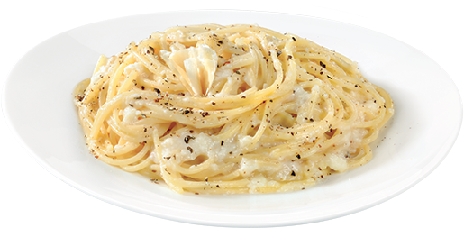

Cacio E Pepe

Description:
Cacio e Pepe literally translates to "cheese and pepper". It is of italian in origin and while it is super simple, it is extremely delicious!
Ingredients:
- Pasta of choice (bucatini or spaghetti recommended)
- Pecorino Romano
- Butter
- Salt
- Pepper
Steps:
- Boil pasta to cook to a perfect al dent, about 6-8 minutes
- Drain pasta, saving about 1 cup of the pasta water
- add drained pasta back to pot and stir in 2 tablespoons of butter
- Grate plenty of cheese on to pasta and add some pasta water and Pepper
- Stir until a cheesy creamy sauce is formed
- Plate the pasta and grate more cheese on top and solt and pepper to taste.
Home